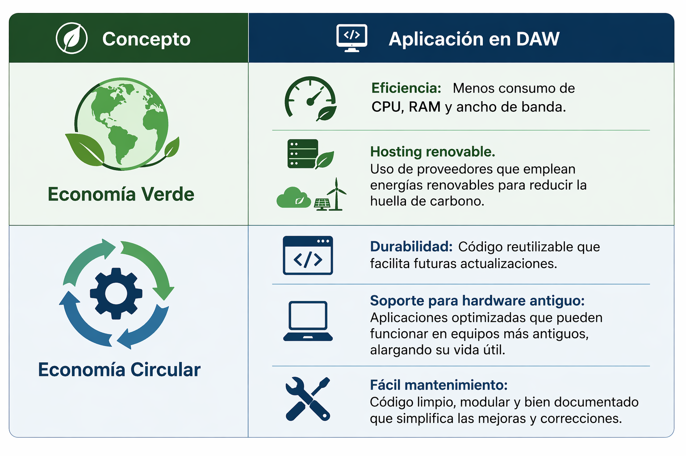
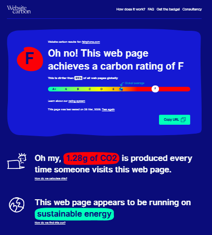
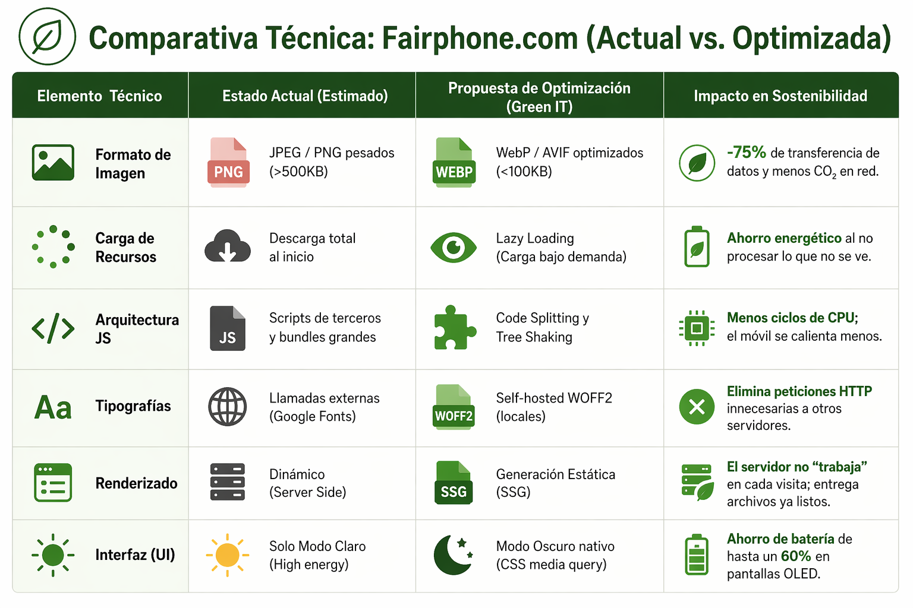
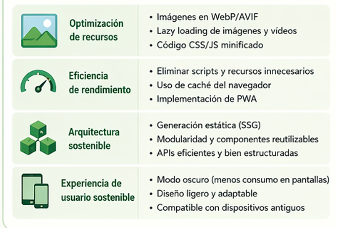
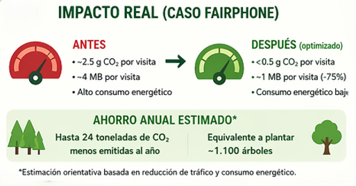
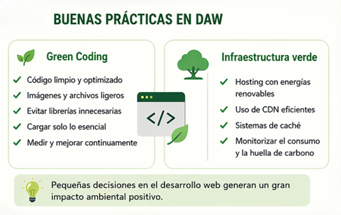
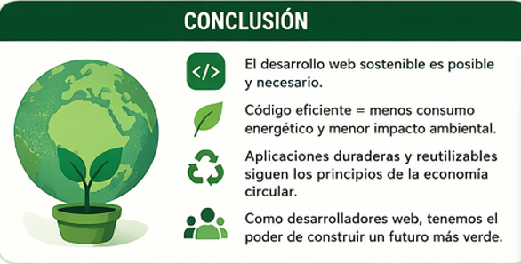

01. Conceptos Clave
Economía Verde: Bienestar social reduciendo riesgos ambientales. En DAW implica eficiencia energética.
Economía Circular: Extender la vida útil del software y hardware mediante la reutilización de código.
Economía Verde: Bienestar social reduciendo riesgos ambientales. En DAW implica eficiencia energética.
Economía Circular: Extender la vida útil del software y hardware mediante la reutilización de código.

La web de Fairphone tiene un Rating F en emisiones. Aunque su servidor es verde, la transferencia de datos es excesiva.
Peso actual: ~4MB por visita.


Si Fairphone applicara mejoras técnicas reduciría:
75% de sus emisiones.
Bajaría el consumo de CPU
y daría ejemplo de Coherencia Digital

Al optimizar, pasaríamos de 2.5g a 0.5g de CO₂ por visita.
Ahorro: 24 toneladas de CO₂/año.

El consumo eléctrico constante y el codigo ineficiente obliga al hardware a trabajar más
Aumenta las emisiones de CO2 y acelera el desgaste de los dispositivos.

Cada linea cuenta.
